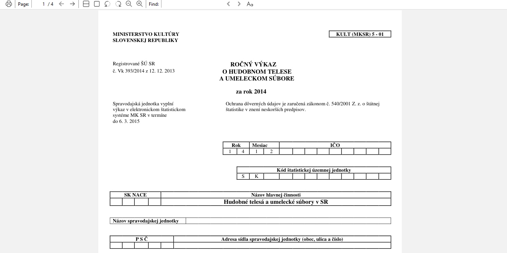
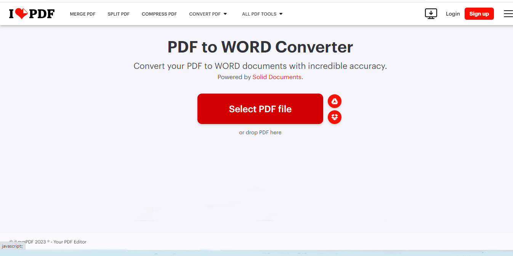
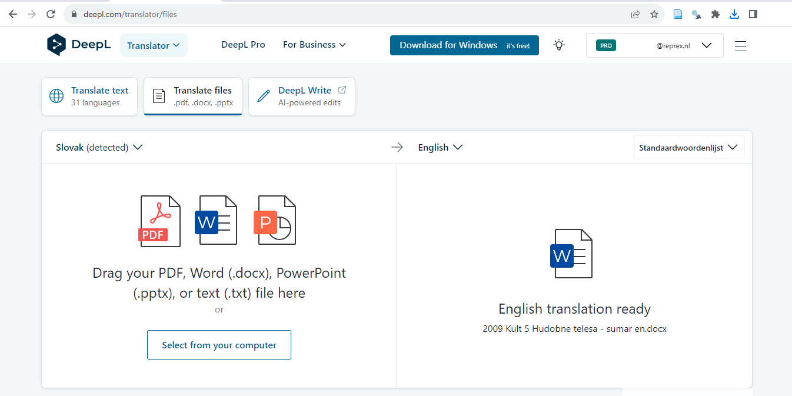
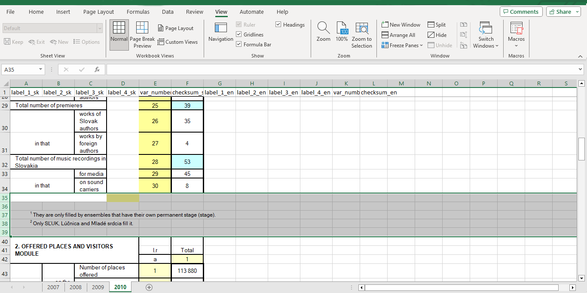
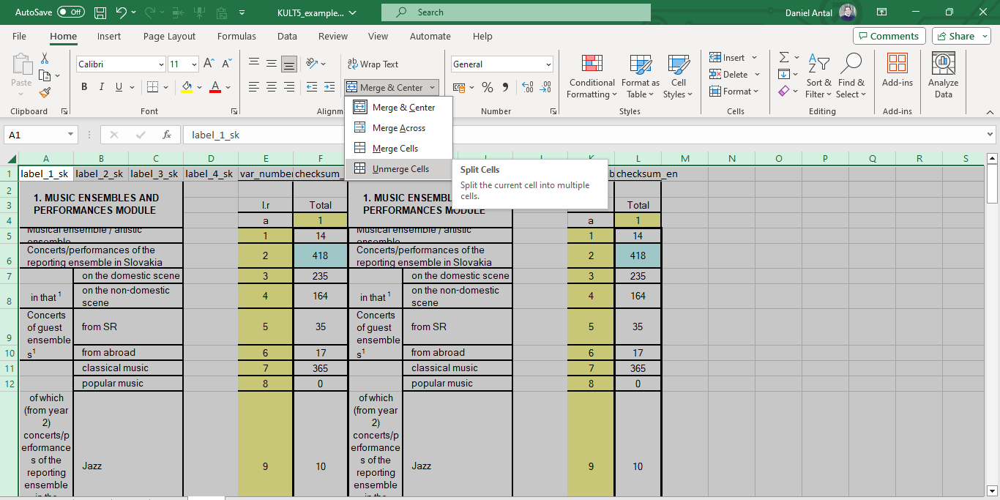
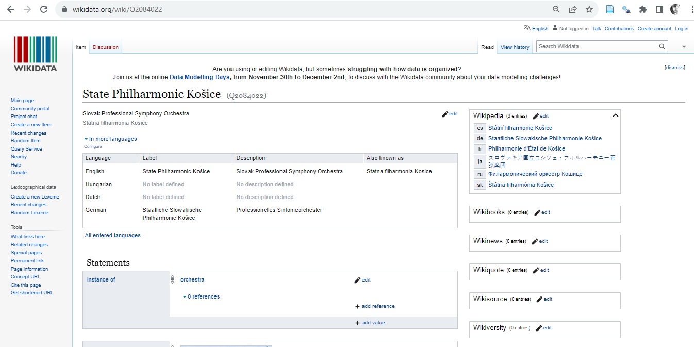
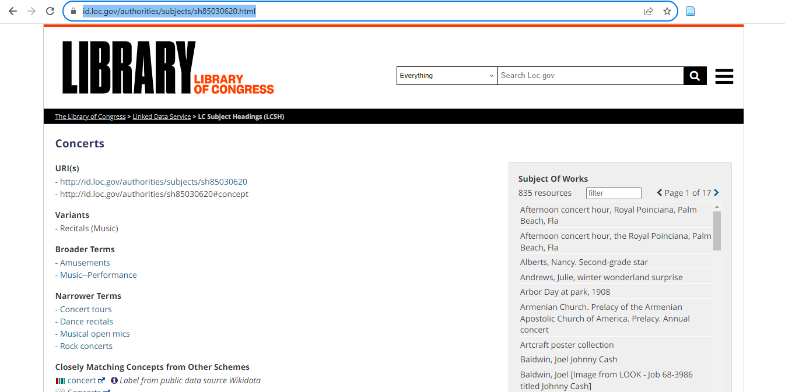
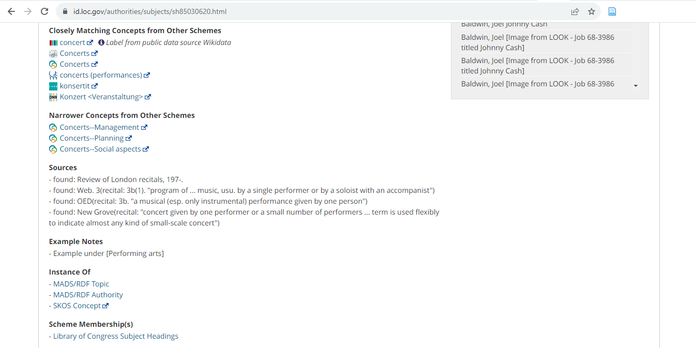

![]()

Retrospective Harmonisation of KULT Surveys
Our granted work follows the Feasibility study for the establishment of a European Music Observatory : final report with caveats. (Commission et al. 2020) The feasibility study does not have a data map, and it reports “data gaps” that music professionals, often without the support of data specialists, felt was missing. These perceived data gaps are problematic but only sometimes reflect missing data.
We distinguish between “perceived” and “actual” data gaps because only actual data gaps require the costliest, primary collection. Perceived data gaps, on the other hand, mean that the information needed by the music professionals and their organisation is available, but it is hard to find, or it is not in a usable format. Sometimes, the data is present but not processed and can be obtained retrospectively. Or, the data is available, but it does not meet FAIR standards, and it is hard to find. Often the same information need can be fulfilled with other data or statistical indicator products.
Surveying is becoming very costly, partly because of the increasing wages of skilled labour and partly because of general survey fatigue in the population. Data strategists, particularly data producers, must weigh the costs and benefits of collecting more data with surveys when alternative administrative data sources or reusable, pre-existing surveys are present.
The most important cultural-sector-specific data source of the Slovak statistical system is the KULT survey program. Any ex-ante, forward-looking data collection plan with surveys must first analyse what is already available in this data collection program and its history.
We use the KULT summary documents to re-create the necessary metadata of the KULT microdata files and to create checkpoints. These PDF files contain the Slovak variable labels for each survey’s module and columns and the sum of numeric values, which will be used as checksums when we read the raw data into R.
Tip
Latest working version: Retrospective Harmonisation of the KULT Surveys on the Digital Music Observatory website with epub and pdf downloads. The source file is always the latest.
For reference:  . See source documents and version history on GitHub.
. See source documents and version history on GitHub.
Funded by the European Union under Grant No. 101095295. Views and opinions expressed are however those of the author(s) only and do not necessarily reflect those of the European Union or the European Commission’s Citizens, Equality, Rights and Values Programme. Neither the European Union nor the granting authority can be held responsible for them.
Rationale
To ensure that answers from respondents surveyed in different settings carry minimal methodological errors and biases and can be meaningfully compared, both data producers and secondary users combine surveys from different sources, that is, they harmonize survey data. Generally, they do so at different stages of the survey lifecycle. Data producers mostly employ harmonization ex-ante, when designing and implementing comparative studies (input harmonization) and when processing the survey data in preparation for their public release (ex-ante output harmonization). […] Secondary users apply harmonization methods retrospectively to already released data files.” (Wysmułek, Tomescu-Dubrow, and Kwak 2022)
The Open Music Europe project aims to become a data producer or co-producer using novel statistical methods that combine governmental data with privately held (music industry) data (See our Memorandum of Understanding (Ministerstvo kultúry SR and Open Music Europe 2023) and the more detailed statistical program (Antal 2023a).) Our most immediate target for harmonisation is the KULT (enterprise or institutional surveys). To suggest beneficial and easy-to-implement, forward-looking, ex-ante modifications, we first need to carry out a retrospective or ex-post analysis to understand the data’s opportunities and weaknesses better.
Working with the PDF documentation
It is possible to work with pdf files in R with the tabulizer package, which can create a fully reproducible workflow, but in our case, it would be a prolonged process because we need to work with many PDF files. Instead, we converted the PDF files to a Word document and copied the tabular information into Excel. In tabulizer, you would have to figure out the coordinates of the table in the partly graphical PDF file and then read it into R. When you work between Word and Excel, you do this visually with a mouse.


Translations
Because I do not speak Slovak, I used DeepL to understand what happened in the PDF files. We will not need this step in our project because we work with native Slovak speakers. Eventually, we will create bilingual labelling, but we will do it differently because of our need for consistency. Adding the translation offers a way to understand the tidy data (table) concept.

From Word to Excel
In our case, the information in the PDF file is stored as text and numbers and not as a scanned picture; therefore, we do not need OCR software to guess what the image of letters and numbers means. We have a usable Word file and can select the tables carefully, ensuring all headings are chosen.

Many conversion utilities can convert a PDF file into an Excel spreadsheet file. We work in Word because this way, we can avoid the same problem that we did not work with the tabulirzer R package: the converter utility does not for sure what a margin is and what is already part of a table. In Excel, your columns will not be aligned, rendering the conversion of a larger table useless. (I repeat the same procedure with the English language translations, as you will see below.)
If you open the example Excel file, you will see examples of already well-copied data. You can use them to copy and paste a header to the top of a new sheet, in this case, the sheet made in the KULT-5 Excel file for the 2010 data.

I used straightforward column names: label_1_sk for the first Slovak language labels, label_2_sk for the second, and label_3_sk for the third. In the KULT PDF for 2007 the table was broken into three columns (because of the merged summary columns), but later, it was more, so I had to add a label_4_sk. There were two critical columns: a numbering, which serves as a guide to the columns of the microdata CSV file, and the actual sum of numeric information reported by the statistical subjects.
For example, Concerts/performances of the reporting ensemble in Slovakia total stitched with on the domestic scene corresponds to the 3rd column in Module 1 of the KULT-05 survey in 2010. The total of this statistic is 235. I call the number three var_number_sk and the total value a checksum_sk because it will be used to check if we read in the microdata correctly. The _sk suffix is used to record that this information is coming from the Slovak version of the Word file; in the unlikely case that you made a copying mistake, it is better to know where to search for the correspondence with the authoritative files. For labelling, the _sk and _en suffixes serve a natural purpose; I do not want to mix up Slovak and English-translated label elements.

In a tidy data table, every observation is a row, and every variable is a column. In this case, the observation corresponds to a variable (a column in the microdata_file_); our KULT-05 summary PDF is observing what can be found in the original microdata. If you work with translations, you must ensure that Concerts/performances of the reporting ensemble in Slovakia total are in the same line in all languages because they observe the meaning of the same variable in the microdata.
The variables, or the columns, must be well-aligned. For example, the var_number_sk must always fall into the same column. Because the table is adjusted from the top left-hand corner, I drag the columns from left to right whenever something does not align. Because the lower Module 2 table has more columns than the upper Module 1, I dragged the var_number_sk and the checksum_sk in the upper table until it aligned well with the lower Module 2 and Module 3. I called the extra column label_4_sk in the Slovak version and label_4_en in English.
At this step, I also remove the footnotes. This step is not critical; when in doubt, leave them be. Removing them in R programmatically would potentially need much exception handling (if the footnotes appear in different locations), so I just do it this way because I have to work in Excel on the alignment of the columns.
Now everything is almost tidy; the most critical information, i.e., where we find the Concerts/performances of the reporting ensemble in Slovakia total in the microdata, is aligned with the labels of every other variable.

The last step is breaking up merged columns in Excel. Combining columns is a good practice for human readability. It will not work well with a computer-actionable table because the computer does not know intuitively what the merging means. So, I point the mouse to the select all table field (the little triangle. between the A heading for the first column and the 1 row label for the first row), and when the entire sheet is selected, I navigate to unmerge cells and break them up.
As a result, the Excel table is less readable for humans but more understandable for the processing workflow. It is a bit disturbing that the variable labels (i.e., the description of the meaning of the variable) is fragmented into 1, 2, 3, or 4 cells, but that will be an easy fix: in R, I will concatenate them into a single label, for example, adding together elements Concerts/performances of the reporting ensemble in Slovakia total separated by - with on the domestic scene in row 8 of my Excel table (corresponding to KULT05.M1.3, or the 3rd column of Module 1 in the KULT05 microdata.) Because we will work with thousands of labels, this concatenation is better done in R; it would take a very long time in Excel, and it is likely that the administrator of that Excel file would get tired and make a mistake at some point.
Remember that all of this post-processing in R is possible if the rows and columns are well aligned. IfConcerts/performances of the reporting ensemble in Slovakia total are not well aligned with on the domestic scene, then the entire codebook and crosswalk table will be useless.
In the tidyverse
require(tidyverse)
# I name the label fragments as a group for easier referencing:
labels_sk <- c("label_1_sk", "label_2_sk", "label_3_sk", "label_4_sk")
labels_en <- c("label_1_en", "label_2_en", "label_3_en", "label_4_en")kult_5_metadata_2007 <- readxl::read_excel(
file.path(Open_Music_Europe_stories_folder,
"data-raw", "KULT5",
"KULT5_example.xlsx"),
sheet="2007"
) %>%
fill(
# When label cells were merged, there are empty cells
# now that I fill from top down.
starts_with("label"), .direction = "down"
) %>%
unite (
# I select any variable that is part of the labels_sk
# group and concatenate them with the - separator
col = label_sk,
any_of(labels_sk), sep = " - ") %>%
unite (col = label_en,
any_of(labels_en), sep = " - ") %>%
mutate (
# When I concatenated empty cells, I got - NA
# texts in the previous step, I remove them:
label_sk = gsub(" - NA", "", label_sk),
label_en = gsub(" - NA", "", label_en) )I am selecting randomly 12 rows (with the highest numbers):
kult_5_metadata_2007 %>%
top_n(12)Selecting by checksum_en# A tibble: 12 × 6
label_sk var_number_sk checksum_sk label_en var_number_en checksum_en
<chr> <dbl> <dbl> <chr> <dbl> <dbl>
1 Koncerty / vyst… 2 399 Concert… 2 399
2 Koncerty / vyst… 3 291 Concert… 3 291
3 Koncerty / vyst… 5 173 Concert… 5 173
4 Koncerty / vyst… 6 572 Concert… 6 572
5 Koncerty / vyst… 12 140 Concert… 12 140
6 v tom koncerty,… 15 166 includi… 15 166
7 v tom koncerty,… 25 347 includi… 25 347
8 Vystúpenia v za… 33 143 Perform… 33 143
9 Koncerty / vyst… 34 144 Concert… 34 144
10 Koncerty / vyst… 51 716 Concert… 51 716
11 Celkový počet d… 52 469 Total n… 52 469
12 v tom - diel za… 54 363 in that… 54 363We have a variable map!
# For readability I select only the English side and
# in a different order:
kult_5_metadata_2007 %>%
top_n(2) %>%
select ( all_of(c("var_number_en", "checksum_en", "label_en")))Selecting by checksum_en# A tibble: 2 × 3
var_number_en checksum_en label_en
<dbl> <dbl> <chr>
1 6 572 Concerts/performances in the country total (yr. 2 +…
2 51 716 Concerts/performances at home and abroad (r. 6 + 34…The var_number_en tells me that in the relevant module I need to look for this column number to get the information. If I sum all the reported values, I should get the checksum_en value which must be equal to the checksum_sk value. The _sk and _en refers to using the original Slovak file or the DeepL translated English version; the numbers should be the same in both.
Labels and Variable Names
There are only two hard things in Computer Science: cache invalidation and naming things. – Phil Karlton
Our entire PDF processing is motivated to create a variable map and to name columns consistently in the different microdata tables the same way if the meaning of the numbers is semantically the same in them. We cannot leave human curation out of the equation now. Sometimes, there may be a slight difference in the label’s wording (even as much as a word is Capitalised or not capitalised), but the data user must know if the semantic meaning of this variable is the same. In other words, did the KULT survey item change over the years?
The best way to do it is to explicitly collect all variations and give a canonical label to the exact same ones. Because I used DeepL, there is no guarantee that every time I ran the DeepL translator, it used the exact same English synonyms for the same Slovak word. Because the Slovak text is the authoritative source, we must ensure that when a label is deemed to be identical to another one in Slovak (and has the same, final, canonical label), then the very same English translation is used for such a text in every instance.
Labelling is important for tabular and visual data presentations and serves as a semantic guide for the analyst. Working with labels to reference the data is not possible in a programmatic way, so we must create an easy-to-type shorthand for each variable. For example, abbreviate “Total concerts in Slovakia” with “concerts_total_sk”.
In the tidyverse dialect of R, snake_case is preferred to other languages’ CamelCase, so we give snake case variable names. When naming the variables, the following considerations are used:
- Avoid non-ASCII characters, such as Slovak special characters, because they may not be available in all programming IDEs
- Because programming languages are derived from English, it is easier to use English language names; the use of English variable names will increase code readability
- Avoid any characters that computer languages interpret with a special meaning or represent differently, and never use a
space,!,~,*,%,+and other mathematical symbols in variable names (Pro tip: use similar filenames on your computer so that they remain portable between Linux, Mac, BSD and Windows systems and cloud storages.) - The same concept, such as
concertortotalshould always beconcert(or performance, but consistently) andtotal(and not sum, or the other way around, only sum but not total) - For the abbreviations of sentences or statements, use a practical word order to benefit from the use of tidyselect functions such as starts_with, ends_with; for example, it is common practice to put the language or geographic reference as a suffix to the end (and not as a prefix to the beginning), such as
concert_total_sk, enabling the selector ends_with(“sk”) - Whenever possible, avoid the use of capitalisation; the selectors will not work if Slovakia is sometimes abbreviated as
SKand sometimes asskor evenSk.
It is likely that the variable labels and variable names will be canonised after using the data a bit.
Identification of Observational Units and Namespaces
One of the potential problems in the creation of an integrated, longitudinal (or panel) dataset is that the Štátna filharmónia Košice may sometimes be labelled as ŠTÁTNA FILHARMÓNIA KOŠICE. It is even more frustrating when one space is replaced with two Štátna filharmónia Košice because it is almost impossible to detect for a human reader in a big spreadsheet.
Identity matching is very important; if we create statistics that must involve all philharmonic orchestras but not chamber orchestras, the Štátna filharmónia Košice must always be selected from our 15 tables or definitively stated “missing”. An observation (row) cannot hide behind a Štátna filharmónia - Košice label variation.
To avoid identification problems, the Statistical Office of the Slovak Republic assigns the organization identification number (IČO) to all types of legal entities, entrepreneurs and public authorities. Whenever the IČO is present, we will retain it, but the use of IČO is not optimal for our use case. Some reporting units may not have an IČO number (because they are internal units of a larger entity, such as the public broadcaster). If we want to compare Czech and Slovak orchestras, we need a more universal identifier.
Linking data about observational units
The Virtual International Authority File (VIAF) identifier serves as a global identifier in the world’s national libraries and other libraries that use the same referencing as their national library. The VIAF record of Štátna filharmónia Košice shows the accepted and preferred names of the orchestra in many global libraries.

Beyond that, we can also immediately see how we can find information about the orchestra in many countries:

It is immediately apparent that using this identifier goes far beyond the ability to join datasets properly. Using the VIAF ID as an identifier, we may find further datasets or information carriers unknown to us and outside of our possession via the web of data or the semantic web.

An alternative to VIAF is the ISNI. ISNI serves a different purpose; in this case, we can see the name changes going back to Czechoslovakia since the orchestra’s inception in 1968. While VIAF is controlled by the national libraries (and its use is free, provided a librarian provides an entity with a VIAF ID), the ISNI is free for all who pay a registration fee.

A third alternative is Wikidata, which uses the QID to identify entities, such as textual references in Slovak, English, and German Wikipedias, as a permanent ID. Its use is free but with caveats.
The great advantage of Wikidata QIDs, is that they serve as a reconciliation tool among many global and national IDs, for example, in the example below we can immediately find how to connect the VIAF and ISNI files of , and go further, for example, to the Bibliothèque nationale de France.


Which is the best to use? There is no clear answer to this question; therefore, we created a namespace in a survey harmonisation program. We collect all name variations of observational units, select a canonical Slovak and a canonical English version, and add various identifiers for the unit.
For data processing and the creation of statistics, internally we can change VIAF, QID, ISNI, and even BNF identifiers if we remain consistent. If we use VIAF for Štátna filharmónia Košice, we should always refer to them with their VIAF ID viaf:123337893) . If we refer to Slovenská Filharmónia with isni:000000011421725X, we should always refer to them with ISNI.
It is very practical to have a QID to extend our knowledge base and database because it can add different entry points to other relational or graph databases. We generally recommend to record at least one of VIAF and ISNI, QID, and when applicable, IČO for Slovak data.
Variable semantics
require(retroharmonize)
kult5_raw <- read_surveys (
file.path(KULT_raw_folder, 2007:2022, "KULT-5.csv"),
.f = "read_csv"
)Linking data about the variables
A dataset can only be used by an analyst if that person understands the contents of the dataset. The tidy dataset concept ensures that an analyst understands the table’s structure. When every observation is in a single row, and every variable is in a column, the dataset is tidy and ideally stored in a relational (tabular) database. Internalizing the knowledge of tidy data is important because users of unreflected data still try to bring the dataset to a tidy format when they wrangle it in a spreadsheet editor.
More semantic information is needed to create derived tables, statistics, or modify tables. We need not only to know that total_concert_audience is a number but also if the unit measured is a number or a thousand. We must understand if budgetary variables are expressed in SKK or EUR. When we have a dimension for the female, male, and non-binary categories, we need to know if F means female or something else. Datasets are usually very hard to reuse if such information is lost, so we are developing an R package that stores this information in a way that easily converts data together with the metadata to the Data cube W3C global, interoperable standard.
Perhaps the most important semantic information is a precise description of the data: it relates to concerts, audiences and total (not average) values. Often, we would like to calculate the Slovak audiences and compare them to neighbouring Czech, Hungarian, or Austrian values. In Slovakia, Czechia, and Hungary, such data will be found in national knowledge centres under the koncert heading, while in Austria, it will be under Konzert and in global databases, most likely under concert.
Controlled vocabularies and subject terms, just like authority files on institutional and person names, enable us to link the information to a variable column in a spelling- and even language-independent way. For example, marking a variable with the sh85030620 subject heading of the Library of Congress Subject Headings will make it understandable in many libraries of the world that we are looking for information on concerts.

Statistical agencies and their Statistical Data and Metadata eXchange, or survey archives such as GESIS, use such controlled and linked vocabularies to create new data catalogues or match data. The global W3C DCAT 2.0 definition and its European version, the DCAT-AP, allow an automatic connection among European open data portals and APIs. The Open Music Europe project develops tools and the Digital Music Observatory in a way that our datasets are equipped with such linking.

Data linking is not only a way to expand our human knowledge, or the knowledge of our intelligent software agents. The links refer to permanent, well-known definitions that are usually created in two formats, depending on the visitor type (human through a browser or a software agent via an application.) Data linking makes our datasets and data catalogue truly interoperable (humans and intelligent artificial agents can use them alike) and reusable (precise documentation will be available for decades and in many natural languages.)

Like in the case of namespaces, Wikidata is a controlled vocabulary reconciliation tool among many languages and national knowledge centres. Therefore, we will usually add the following information to a concert_total_audience_sk variable: A descriptive label in the Slovak and English language, at least one reliable knowledge-centers controlled vocabulary term(s) for the concepts, and the relevant Wikidata entries for further reconciliation among countries and systems.

We do not recommend reliance only on Wikidata; while it is the easiest and fastest to find definitions on Wikidata, statistical agencies, libraries, and music archives generally maintain more precise and purpose-built vocabularies. Whenever we do not see such a conceptual description (link) immediately, starting with the Wikidata entry is a good start.
Further work
WP3: Survey harmonisation
The most important cultural-sector-specific data source of the Slovak statistical system is the KULT survey program. Any ex-ante, forward-looking data collection plan with surveys must first analyse what is already available in this data collection program and its history.
It is a task for WP3 to analyse the survey program’s contents to contrast the available data and the additionally easily collectable new information with the data needs identified by WP1, WP2, and WP3 regarding sustainability and education. For this, we need to map concepts from theSOZ vocabulary and other vocabularies to the KULT variable map and compare it with the concepts that the researchers in WP1, WP2 and WP3 want to measure to fill the data gaps identified by the Feasibility study for the establishment of a European Music Observatory : final report or other representative data users. (Commission et al. 2020)
As a first step, we need to create a consistent labelling of the variables in Slovak and English, starting with the Slovak variables, as the language of the survey program is only Slovak. Then, with the domain-specific expertise of the researchers in WP1, WP2, and WP3, we need to connect the variables (and their labels) to their more abstract concepts, such as “concerts”, “budgets”, and “audiences”. In WP1, we work mainly with other surveys; however, KULT is important in the categorisation of economic performance, i.e., when we want to delineate the economic performance of the NACE group J58, it will be the music and audiovisual KULT surveys that can help us most.
In the first phase, we do not need to create a 100% conceptualisation of the KULT archive: we need to focus on those measurement areas that are particularly important for the data gaps identified by the work packages; for example, “music works”, “sound recordings”, “concerts”, or various employment concepts. In our next, January workshop, we can prioritise the review and changes of concepts and create new question labels or reuse the existing question labels for variables that we want to measure in a new survey or where we want to initiate changes. See the related work in the open repository of the work package [Open Music Europe (2023b)
WP1: Data gap identification
The living document for the WP1 is already relatively clear on the targetted economic concepts to measure: gross value added, various income components and employment. We need to find novel ways for categorisation of employment or revenue to separate music-related income or employment from non-music income. Is the employment related to the creation of sound recordings or music works? Or the performance of music works? See the related work in the open repository of the work package (Open Music Europe 2023c)
WP2: Data gap identification
So far, the living document for the WP2 needs to be clearer on what music diversity and circulation concepts it wants to measure. This WP2 will most likely rely on many non-surveying data sources; nevertheless, the conceptualisation of music diversity and circulation must start any preparation for Taskstream 2 or survey design. See the related work in the open repository of the work package (Open Music Europe 2023a)
WP4: Software ecosystem
The development of the retroharmonize R package was a generalisation of harmonisation problems with CAP surveys conducted in Hungary, Slovakia and Croatia (in the CEEMID project, a predecessor of Open Music Europe) with Eurobarometer surveys (Antal 2021). In the later generalisation, we used the Afrobarometer and the Arab Barometer survey data. Methodologically, the workflow is similar to the workflow of Marta Kołczyńska (Kołczyńska 2022), who was a contributor to the first release of the package. It was also used with the CEEMID/Digital Music Observatory Music Professional Surveys.
The KULT survey program’s data sets new requirements. Unlike the Eurobarometer, Afrobarometer and Arab Barometer, this survey program was not published for microdata access, and. the level of documentation is lower; the number of surveys is high. Another novelty is that the KULT surveys are longitudinal; i.e., the same observational units (respondents) appear in multiple files. The longitudinal nature of the program adds an entirely new dimension to harmonisation: the entity matching of observational (statistical) units.
In Open Music Europe, we aim to produce novel datasets that need further functionality for ex-ante harmonisation. As the package’s name suggests, it is a retrospective harmonisation package and will not make ex-ante harmonisation fully reproducible. The new functionality aims to improve data linking and documentation and add support to the concept harmonisation part of the general research workflow. These additions enhance the usability of the retrospective harmonisation.
We identified two important features that are not specific to survey harmonisation and will eventually be detached to further generalised packages.
The dataset package aims to make native R datasets more reusable and interoperable by retaining more provenance, semantic and structural metadata and providing easier import/export/exchange with standardised data catalogues and their datasets (Antal 2023c). This package improves the portability, interoperability, and reusability of our results. For more detailed description of the planned work see (Antal 2023b).
The planned crosswalk package aims to make relabelling and recording easier. This is a general task that is necessary for administrative data sources, too.
The DDIwR package (Dusa 2021) aims to manage better the surveying workflow and the archival of surveying documents. We are still investigating to what extent this is helpful for Open Music Europe, while it certainly adds to the future-proof qualities of our work, the exploitation of these additional features is more straightforward in a long-term or permanent program (such as KULT itself, not Open Music Europe.)
WP5: Music Observatory prototype
Namespaces
Global namespaces and authority files are, by design, machine-actionable; they can be read by humans, activating a html representation for human browsing and an RDF serialisation for data applications. We will encourage the use of at least two PIDs for each observational unit, following the best practices that will be elaborated in greater detail in 5.1.
We will use either ISNI or VIAF identifiers for natural and legal persons. The use of ISNI is paid, and the organisation itself must initiate it. The use of VIAF is free because it is a public service of the Slovak National Library, but it goes through a curation process. For our purposes, they are equally good and they can be used interchangeably.
We will also use a QID for data coordination. The QID is a globally unique identifier in Wikidata and Dbpedia. They are used in the statistical, research and cultural heritage domains as temporary or necessary global IDs when the use of an authority file is not possible or takes a long time (for example, we have to encourage each orchestra to obtain its own ISNI number.)
The use of Wikidata is getting more and more common among knowledge organisations and even EU organisations. Originally developed as a reconciliation tool for Wikipedia, Europeana already recognised its value for pan-European data harmonisation in 2015. Since that, it had been used as a decentralised, curated, shared authority control system in several European countries. We think that VIAF is the most suitable authority control, but the flexibility and functionality of Wikidata makes it a worthy parallel system in itself (Bianchini, Bargioni, and Pellizzari di San Girolamo 2021; Veen 2019; Rossenova, Duchesne, and Blümel 2022) We reached out to the Wikimedia Foundation and WMSK, former official legal name Wikimedia Slovenská republika to not only use their open source product, i.e, Wikibase for authority control reconciliation, but as a tool to push our knowledge and our namespace to the Wikidata. (Fagerving 2023)
References
Antal, Daniel. 2021. ‘retroharmonize Ex Post Survey Data Harmonization’. Zenodo. https://doi.org/10.5281/zenodo.5781724.
———. 2023a. ‘Pilot Program for Novel Music Industry Statistical Indicators in the Slovak Republic’. https://doi.org/10.5281/zenodo.8399254.
———. 2023b. ‘Making Datasets Truly Interoperable and Reusable in R’. Zenodo. https://doi.org/10.5281/zenodo.10091666.
———. 2023c. ‘Dataset Create Interoperable and Well-Documented Data Frames’. CRAN. https://doi.org/10.5281/zenodo.6703764.
Bianchini, Carlo, Stefano Bargioni, and Camillo Carlo Pellizzari di San Girolamo. 2021. ‘Beyond VIAF Wikidata as a Complementary Tool for Authority Control in Libraries’. Information Technology and Libraries 40 (2). https://doi.org/10.6017/ital.v40i2.12959.
Commission, European, Sport Directorate-General for Education Youth, Culture, M Clarke, P Vroonhof, J Snijders, A Le Gall, et al. 2020. Feasibility Study for the Establishment of a European Music Observatory : Final Report. Publications Office. https://doi.org/doi/10.2766/9691.
Dusa, Adrian. 2021. ‘DDIwR DDI with r’. https://CRAN.R-project.org/package=DDIwR.
Fagerving, Alicia. 2023. ‘Wikidata for Authority Control: Sharing Museum Knowledge with the World’. Digital Humanities in the Nordic and Baltic Countries Publications 5 (1): 222–39. https://doi.org/10.5617/dhnbpub.10665.
Kołczyńska, Marta. 2022. ‘Combining Multiple Survey Sources: A Reproducible Workflow and Toolbox for Survey Data Harmonization’. Methodological Innovations 15 (1): 62–72. https://doi.org/10.1177/20597991221077923.
Ministerstvo kultúry SR, and Open Music Europe. 2023. ‘Memorandum o porozumení o využití výsledkov analýz otvorených politík v kontexte slovenského kultúrneho a kreatívneho priemyslu a sektorových verejných politík v spolupráci s konzorciom pre výskum a inovácie s názvom OpenMuse. [Memorandum of Understanding on utilizing the Open Policy Analysis results of the OpenMuse Research and Innovation Consortium in the context of Slovak cultural and creative industries and sectors’ public policies]’. https://www.crz.gov.sk/zmluva/7645338/.
Open Music Europe. 2023a. ‘Repository: Report on Music Diversity and Circulation in Europe. GitHub’. Open Policy Analysis Repository with Standardized File Structure. 2023. https://github.com/dataobservatory-eu/report-music-diversity-circulation-europe/.
———. 2023b. ‘Repository: Report on Music, Society, and Citizenship in Europe. GitHub’. Open Policy Analysis Repository with Standardized File Structure. 25 March 2023. https://github.com/dataobservatory-eu/report-music-society-citizenship.
———. 2023c. ‘Repository: Report on the European Music Economy. GitHub’. Open Policy Analysis Repository with Standardized File Structure. 26 March 2023. https://github.com/dataobservatory-eu/report-european-music-economy.
Rossenova, Lozana, Paul Duchesne, and Ina Blümel. 2022. ‘Wikidata and Wikibase as Complementary Research Data Management Services for Cultural Heritage Data’. In CEUR Workshop Proceedings. https://serwiss.bib.hs-hannover.de/frontdoor/deliver/index/docId/2573/file/rossenova_etal2022-wikidata_research_data_mgmt.pdf.
Veen, Theo van. 2019. ‘Wikidata: From “an” Identifier to “the” Identifier’. Information Technology and Libraries 38 (2): 72–81. https://doi.org/10.6017/ital.v38i2.10886.
Wysmułek, Ilona, Irina Tomescu-Dubrow, and Joonghyun Kwak. 2022. ‘Ex-Post Harmonization of Cross-National Survey Data: Advances in Methodological and Substantive Inquiries’. Quality & Quantity 56 (3): 1701–8. https://doi.org/10.1007/s11135-021-01187-7.